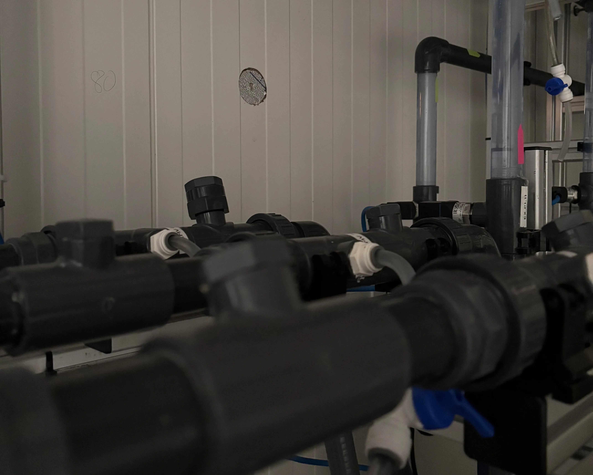

01
Brackish salinity
Typical target range includes suitable sources in the 1,500–20,000 ppm TDS range, subject to water analysis and project design.
Groundwater is HydroVolta’s main stream: brackish wells, hard groundwater, saline intrusion and mixed nitrate/salinity challenges. The goal is simple: recover more usable water, reduce residual brine and make deployment practical through modular systems.

HydroVolta should lead with practical groundwater pain: salinity, scaling, low recovery, chemical dependency and brine disposal.
Typical target range includes suitable sources in the 1,500–20,000 ppm TDS range, subject to water analysis and project design.
Ultrasound-assisted operation is designed to reduce scaling stress and support lower cleaning burden in validated contexts.
Selective ion removal can be configured around sodium, chloride, nitrate, fluoride and other project-specific targets.
The first objective is high water recovery; the second is evaluating if residual brine can become a useful value stream.

Groundwater projects should not start with a promise. They start with water chemistry, target use, required flow, recovery target and discharge constraints.
HydroVolta qualifies projects by source water, target use, flow capacity, discharge limits and brine chemistry. We will tell you if SonixED™ or a brine valorization pathway is not the right fit.